Chapter 3 Data quality control (QC)
In this section, we remove the genes and cells with low quality, by processing the following three steps: (1) quick gene filtering based on expression profile across cells, (2) cell filtering based on QC metrics, and (3) second gene filtering based on mean expression levels across cells.
3.1 Quick QC
Load the data.
rm(list = ls())
source("R/function_general.R")
sc68_vehi <- readRDS(file = "backup/01_001_sc68_vehi_raw.rds")
sc68_cisp <- readRDS(file = "backup/02_001_sc68_cisp_raw.rds")
pdac_ast1 <- readRDS(file = "backup/05_001_pdac_ast1_raw.rds")
pdac_arna <- readRDS(file = "backup/06_001_pdac_arna_raw.rds")
pbmc_4000 <- readRDS(file = "backup/10_001_pbmc_4000_raw.rds")
pbmc_6000 <- readRDS(file = "backup/11_001_pbmc_6000_raw.rds")Check the size of the gene-by-sample matrices.
rbind(dim(sc68_vehi[["data"]][["raw"]]), dim(sc68_cisp[["data"]][["raw"]]),
dim(pdac_ast1[["data"]][["raw"]]), dim(pdac_arna[["data"]][["raw"]]),
dim(pbmc_4000[["data"]][["raw"]]), dim(pbmc_6000[["data"]][["raw"]]))[1,] 33538 5905
[2,] 33538 3433
[3,] 25807 428
[4,] 19811 8701
[5,] 33694 4340
[6,] 32738 5419The following function do_quickQC() removes genes for which the number
of non-zero expressing cells is less than min_nsamples.
In addition, this function counts the number of reads, the number of non-zero
expressing genes, and the percent of reads that map to the mitochondrial genes,
e.g., MT-Co1, mt-Co1, etc.
sc68_vehi <- do_quickQC(obj = sc68_vehi, min_nsamples = 10,
mitochondria_symbol = "^MT-")
sc68_cisp <- do_quickQC(obj = sc68_cisp, min_nsamples = 10,
mitochondria_symbol = "^MT-")
pdac_ast1 <- do_quickQC(obj = pdac_ast1, min_nsamples = 10,
mitochondria_symbol = "^MT-")
pdac_arna <- do_quickQC(obj = pdac_arna, min_nsamples = 10,
mitochondria_symbol = "^MT-")
pbmc_4000 <- do_quickQC(obj = pbmc_4000, min_nsamples = 10,
mitochondria_symbol = "^MT-")
pbmc_6000 <- do_quickQC(obj = pbmc_6000, min_nsamples = 10,
mitochondria_symbol = "^MT-")The results are stored in
obj[["sample"]][["nReads"]], obj[["sample"]][["nGenes"]],
obj[["sample"]][["percent_MT"]], and obj[["data"]][["raw"]].
Users can always check the parameter values in obj[["history"]].
For example, see obj[["history"]][["do_quickQC"]][["min_nsamples"]].
Check the size of the gene-by-sample matrix.
rbind(dim(sc68_vehi[["data"]][["raw"]]), dim(sc68_cisp[["data"]][["raw"]]),
dim(pdac_ast1[["data"]][["raw"]]), dim(pdac_arna[["data"]][["raw"]]),
dim(pbmc_4000[["data"]][["raw"]]), dim(pbmc_6000[["data"]][["raw"]]))[1,] 16784 5905
[2,] 15605 3433
[3,] 10364 428
[4,] 13653 8701
[5,] 13829 4340
[6,] 11946 5419Save the objects.
saveRDS(sc68_vehi, file = "backup/01_002_sc68_vehi_quickQC.rds")
saveRDS(sc68_cisp, file = "backup/02_002_sc68_cisp_quickQC.rds")
saveRDS(pdac_ast1, file = "backup/05_002_pdac_ast1_quickQC.rds")
saveRDS(pdac_arna, file = "backup/06_002_pdac_arna_quickQC.rds")
saveRDS(pbmc_4000, file = "backup/10_002_pbmc_4000_quickQC.rds")
saveRDS(pbmc_6000, file = "backup/11_002_pbmc_6000_quickQC.rds")3.2 Sample QC
Load the data.
source("R/function_general.R")
source("R/plot.R")
sc68_vehi <- readRDS(file = "backup/01_002_sc68_vehi_quickQC.rds")
sc68_cisp <- readRDS(file = "backup/02_002_sc68_cisp_quickQC.rds")
pdac_ast1 <- readRDS(file = "backup/05_002_pdac_ast1_quickQC.rds")
pdac_arna <- readRDS(file = "backup/06_002_pdac_arna_quickQC.rds")
pbmc_4000 <- readRDS(file = "backup/10_002_pbmc_4000_quickQC.rds")
pbmc_6000 <- readRDS(file = "backup/11_002_pbmc_6000_quickQC.rds")The following function plot_metaData() outputs a scatter plot between the
input meta data for each cell
The arguments are df (two-dimensional data frame),
title (title of the plot), xlabel (x-axis label), and
ylabel (y-axis label).
my_func <- function(obj, metaname1, metaname2){
df <- data.frame(x = obj[["sample"]][[metaname1]],
y = obj[["sample"]][[metaname2]])
p <- plot_metaData(df = df,
title = obj[["history"]][["make_asurat_obj"]][["obj_name"]],
title_size = 16, xlabel = metaname1, ylabel = metaname2)
return(p)
}
# ----------------------------------------
# sc68_vehi
# ----------------------------------------
p <- my_func(obj = sc68_vehi, metaname1 = "nReads", metaname2 = "nGenes")
filename <- "figures/figure_01_0010.png"
ggsave(file = filename, plot = p, dpi = 300, width = 4, height = 4)
p <- my_func(obj = sc68_vehi, metaname1 = "nGenes", metaname2 = "percent_MT")
filename <- "figures/figure_01_0011.png"
ggsave(file = filename, plot = p, dpi = 300, width = 4, height = 4)


The following function plot_metaData_wAnnotation() outputs a scatter plot for
the meta data input, which is ranked according to their values.
The arguments are vec (one-dimensional vector of single-cell QC metrics,
e.g., one of obj[["sample"]][["nReads"]], obj[["sample"]][["nGenes"]]),
target_xRange (x-axis interval in which one would like to find an
inflection point), n (number of dividing points for target_xRange),
title, xlabel, and ylabel.
Note that the inflection points will be used for the cell filtering, and
the calculated inflection points are approximated to the nearest integers.
my_func <- function(obj, metaname, target_xRange){
vec <- obj[["sample"]][[metaname]]
p <- plot_metaData_wAnnotation(
vec = obj[["sample"]][[metaname]], target_xRange = target_xRange,
n = round(0.1 * (target_xRange[2] - target_xRange[1])),
title = obj[["history"]][["make_asurat_obj"]][["obj_name"]],
title_size = 16, xlabel = "Ranked samples", ylabel = metaname
)
return(p)
}
# ----------------------------------------
# sc68_vehi
# ----------------------------------------
target_xRange <- c(100, 4500)
p <- my_func(sc68_vehi, metaname = "nReads", target_xRange = target_xRange)
filename <- "figures/figure_01_0020.png"
ggsave(file = filename, plot = p, dpi = 300, width = 4, height = 3.7)
target_xRange <- c(100, 5400)
p <- my_func(sc68_vehi, metaname = "nGenes", target_xRange = target_xRange)
filename <- "figures/figure_01_0021.png"
ggsave(file = filename, plot = p, dpi = 300, width = 4, height = 3.7)


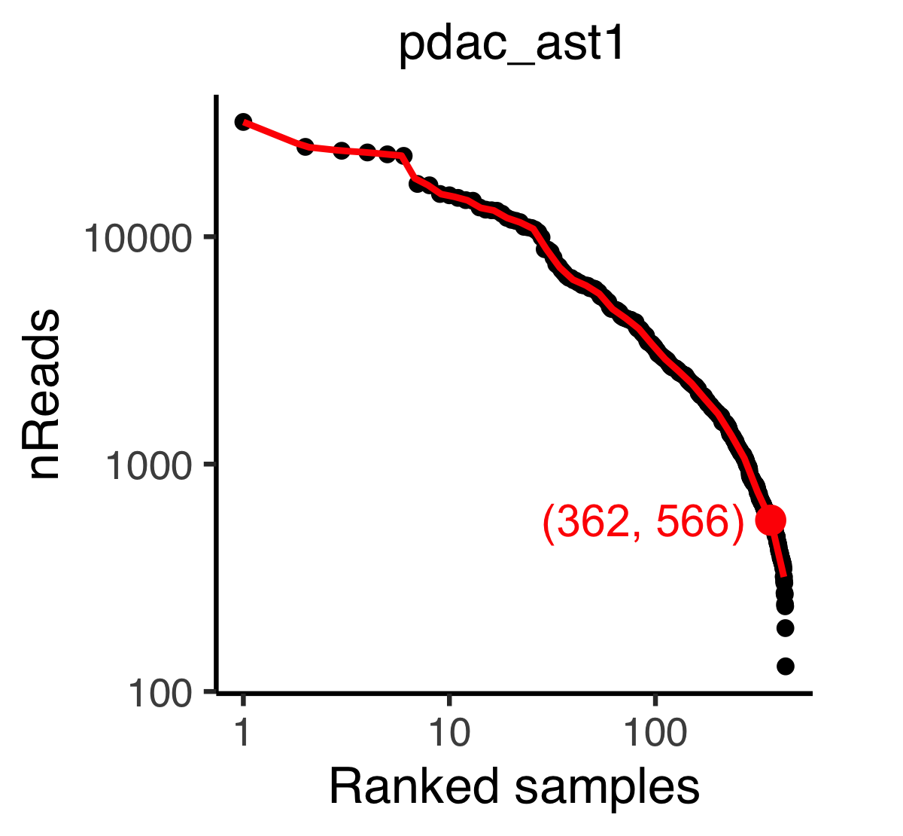


 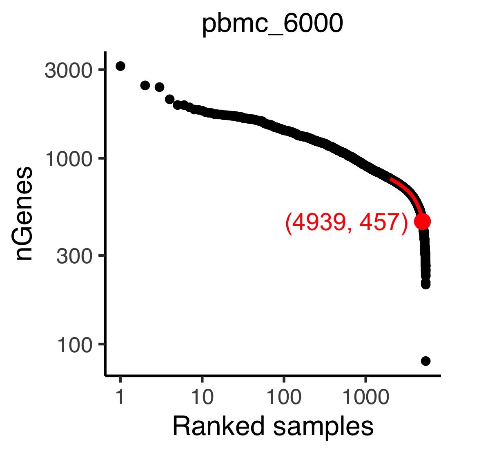
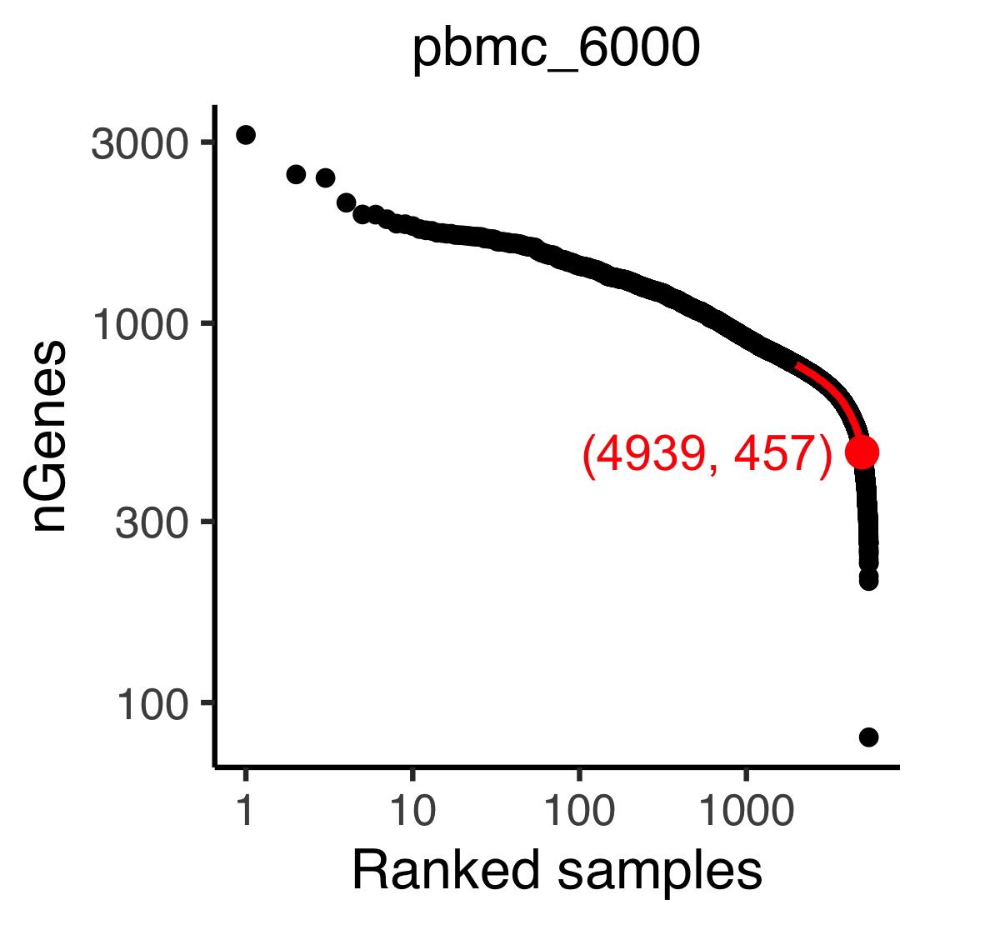
The following function trim_samples() filters out the low quality
cells by setting minimum and maximum values of the calculated QC metrics.
sc68_vehi_red <- trim_samples(obj = sc68_vehi,
min_nReads = 4828, max_nReads = 40000,
min_nGenes = 1363, max_nGenes = 1e+10,
min_percent_MT = 0, max_percent_MT = 13)
sc68_cisp_red <- trim_samples(obj = sc68_cisp,
min_nReads = 1424, max_nReads = 40000,
min_nGenes = 1138, max_nGenes = 1e+10,
min_percent_MT = 0, max_percent_MT = 15)
pdac_ast1_red <- trim_samples(obj = pdac_ast1,
min_nReads = 0, max_nReads = 1e+10,
min_nGenes = 0, max_nGenes = 1e+10,
min_percent_MT = 0, max_percent_MT = 100)
pdac_arna_red <- trim_samples(obj = pdac_arna,
min_nReads = 1005, max_nReads = 20000,
min_nGenes = 487, max_nGenes = 1e+10,
min_percent_MT = 0, max_percent_MT = 20)
pbmc_4000_red <- trim_samples(obj = pbmc_4000,
min_nReads = 2239, max_nReads = 20000,
min_nGenes = 884, max_nGenes = 1e+10,
min_percent_MT = 0, max_percent_MT = 8)
pbmc_6000_red <- trim_samples(obj = pbmc_6000,
min_nReads = 1016, max_nReads = 7000,
min_nGenes = 457, max_nGenes = 1e+10,
min_percent_MT = 0, max_percent_MT = 8)Check the size of the gene-by-sample matrices.
rbind(dim(sc68_cisp_red[["data"]][["raw"]]),
dim(sc68_vehi_red[["data"]][["raw"]]),
dim(pdac_ast1_red[["data"]][["raw"]]),
dim(pdac_arna_red[["data"]][["raw"]]),
dim(pbmc_4000_red[["data"]][["raw"]]),
dim(pbmc_6000_red[["data"]][["raw"]]))[1,] 15605 2285
[2,] 16784 3923
[3,] 10364 428
[4,] 13653 2051
[5,] 13829 3815
[6,] 11946 4878Save the objects.
saveRDS(sc68_vehi_red, file = "backup/01_003_sc68_vehi_trim_samples.rds")
saveRDS(sc68_cisp_red, file = "backup/02_003_sc68_cisp_trim_samples.rds")
saveRDS(pdac_ast1_red, file = "backup/05_003_pdac_ast1_trim_samples.rds")
saveRDS(pdac_arna_red, file = "backup/06_003_pdac_arna_trim_samples.rds")
saveRDS(pbmc_4000_red, file = "backup/10_003_pbmc_4000_trim_samples.rds")
saveRDS(pbmc_6000_red, file = "backup/11_003_pbmc_6000_trim_samples.rds")3.3 Variable QC
Load the data.
rm(list = ls())
source("R/function_general.R")
source("R/plot.R")
sc68_vehi <- readRDS(file = "backup/01_003_sc68_vehi_trim_samples.rds")
sc68_cisp <- readRDS(file = "backup/02_003_sc68_cisp_trim_samples.rds")
pdac_ast1 <- readRDS(file = "backup/05_003_pdac_ast1_trim_samples.rds")
pdac_arna <- readRDS(file = "backup/06_003_pdac_arna_trim_samples.rds")
pbmc_4000 <- readRDS(file = "backup/10_003_pbmc_4000_trim_samples.rds")
pbmc_6000 <- readRDS(file = "backup/11_003_pbmc_6000_trim_samples.rds")The following function plot_meanReads_wAnnotation() outputs a scatter plot
for mean of number of reads for each gene, which is ranked according to their
values.
The arguments are obj, threshold (set by trial and error),
digits (number of digits after the decimal point for the annotated value),
title, xlabel, and ylabel.
my_func <- function(obj, threshold){
p <- plot_meanReads_wAnnotation(
obj = obj, threshold = threshold, digits = 2,
title = obj[["history"]][["make_asurat_obj"]][["obj_name"]],
title_size = 16, xlabel = "Ranked genes", ylabel = "Mean of raw read counts"
)
return(p)
}
# ----------------------------------------
# sc68_vehi
# ----------------------------------------
p <- my_func(obj = sc68_vehi, threshold = 0.2)
filename <- "figures/figure_01_0030.png"
ggsave(file = filename, plot = p, dpi = 300, width = 4, height = 3.7)

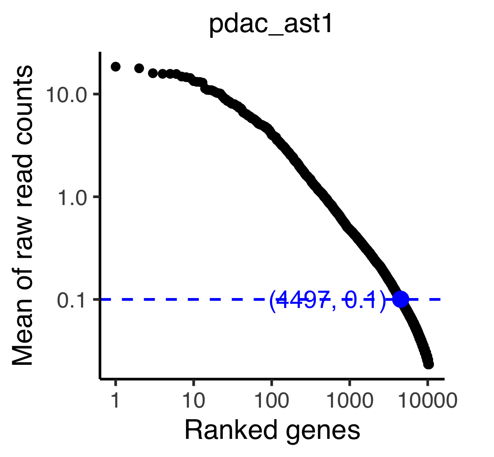 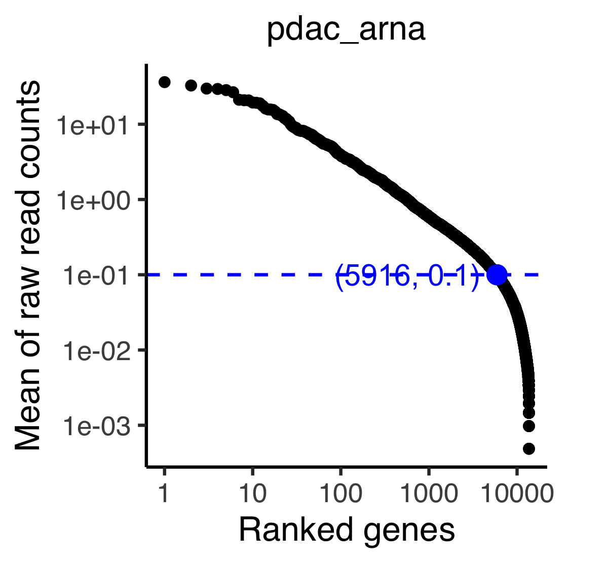


The following function trim_variables() filters out the low quality
genes by setting a minimum value as min_meanReads.
sc68_vehi_red <- trim_variables(obj = sc68_vehi, min_meanReads = 0.20)
sc68_cisp_red <- trim_variables(obj = sc68_cisp, min_meanReads = 0.20)
pdac_ast1_red <- trim_variables(obj = pdac_ast1, min_meanReads = 0.10)
pdac_arna_red <- trim_variables(obj = pdac_arna, min_meanReads = 0.10)
pbmc_4000_red <- trim_variables(obj = pbmc_4000, min_meanReads = 0.05)
pbmc_6000_red <- trim_variables(obj = pbmc_6000, min_meanReads = 0.03)Check the scatter plots between QC metrics for each cell
my_func <- function(obj, metaname1, metaname2){
df <- data.frame(x = obj[["sample"]][[metaname1]],
y = obj[["sample"]][[metaname2]])
p <- plot_metaData(df = df,
title = obj[["history"]][["make_asurat_obj"]][["obj_name"]],
title_size = 16, xlabel = metaname1, ylabel = metaname2)
return(p)
}
# ----------------------------------------
# sc68_vehi
# ----------------------------------------
p <- my_func(sc68_vehi_red, metaname1 = "nReads", metaname2 = "nGenes")
filename <- "figures/figure_01_0035.png"
ggsave(file = filename, plot = p, dpi = 300, width = 4, height = 4)
p <- my_func(sc68_vehi_red, metaname1 = "nGenes", metaname2 = "percent_MT")
filename <- "figures/figure_01_0036.png"
ggsave(file = filename, plot = p, dpi = 300, width = 4, height = 4)


 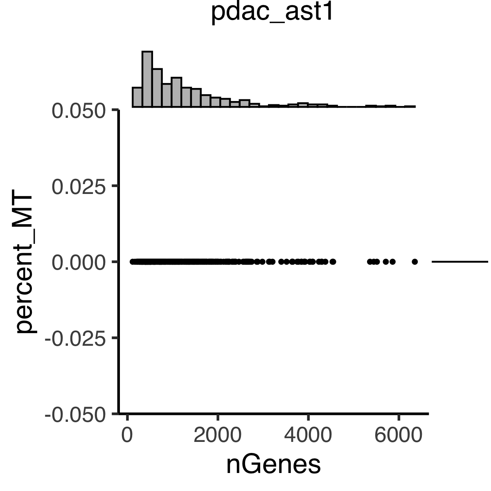
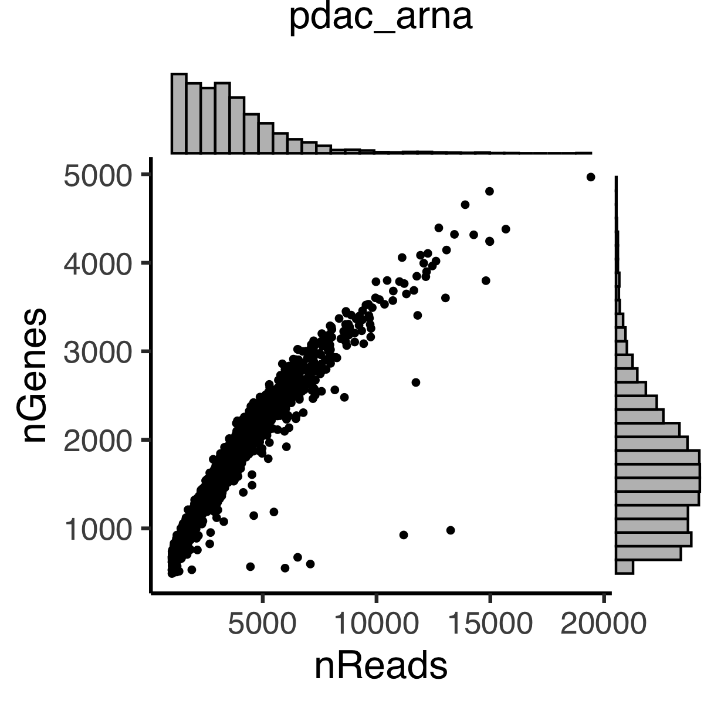
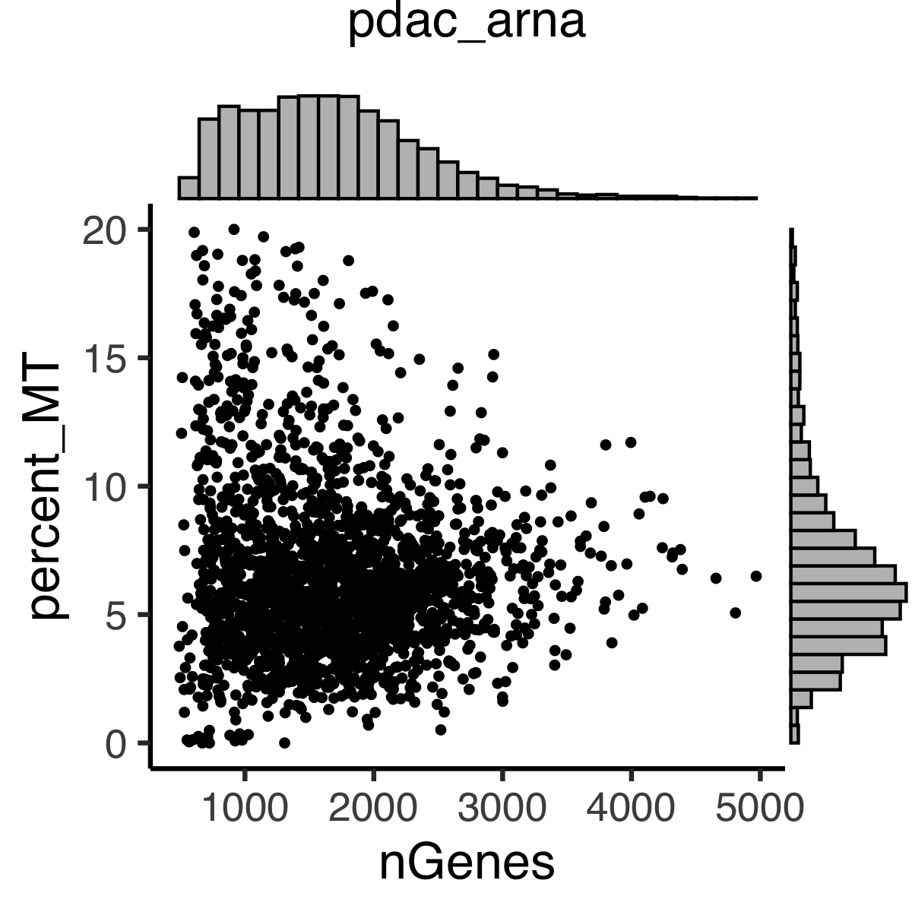
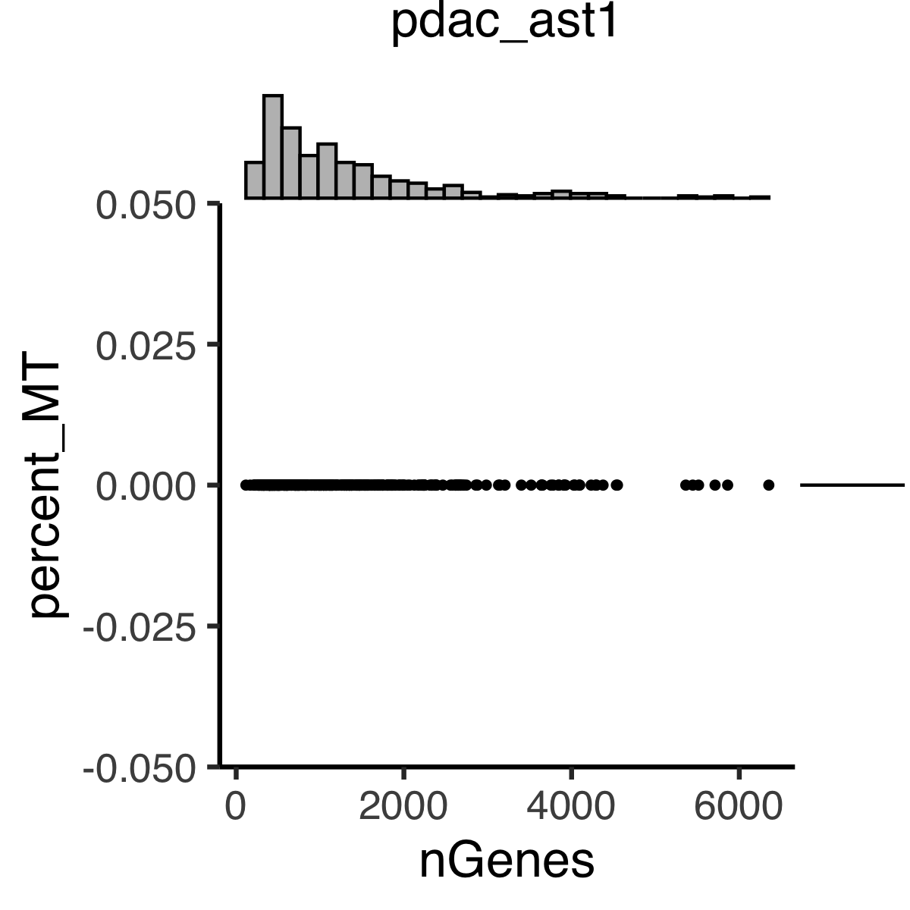
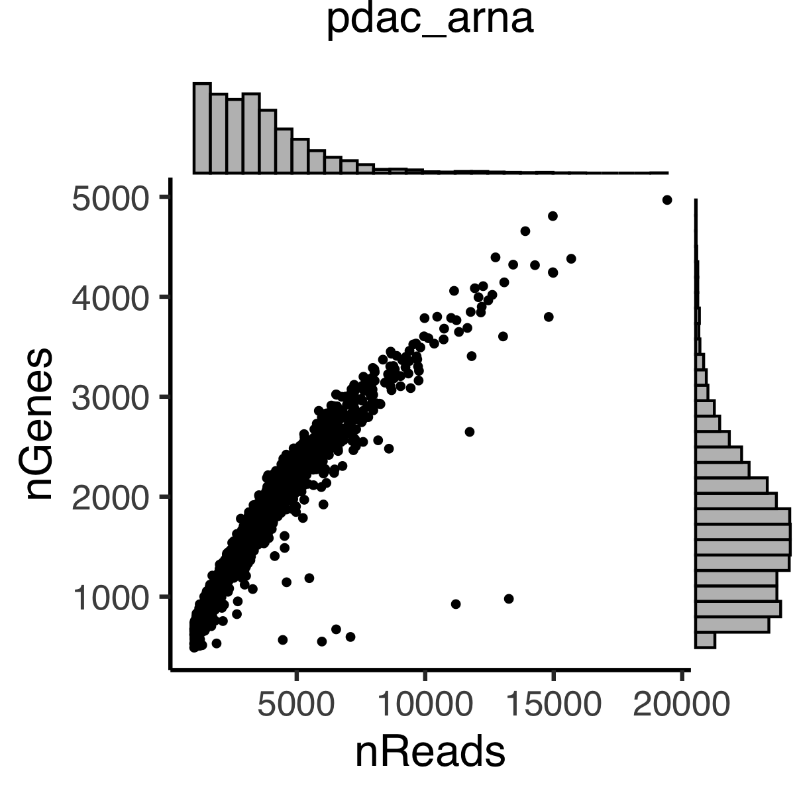
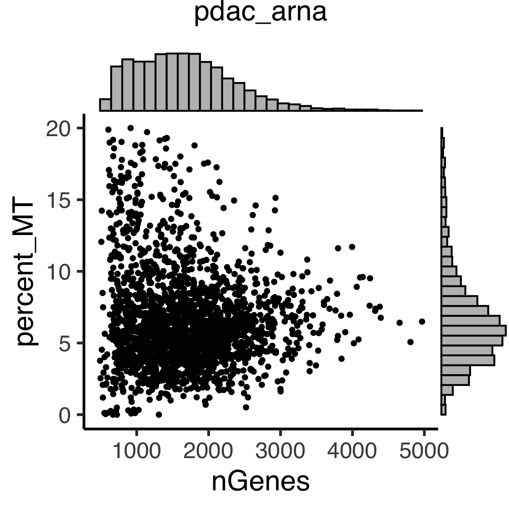


Check the size of the gene-by-sample matrices.
rbind(dim(sc68_vehi_red[["data"]][["raw"]]),
dim(sc68_cisp_red[["data"]][["raw"]]),
dim(pdac_ast1_red[["data"]][["raw"]]),
dim(pdac_arna_red[["data"]][["raw"]]),
dim(pbmc_4000_red[["data"]][["raw"]]),
dim(pbmc_6000_red[["data"]][["raw"]]))[1,] 6581 3923
[2,] 6347 2285
[3,] 4497 428
[4,] 5893 2051
[5,] 6658 3815
[6,] 5169 4878Save the objects.
saveRDS(sc68_vehi_red, file = "backup/01_004_sc68_vehi_trim_variables.rds")
saveRDS(sc68_cisp_red, file = "backup/02_004_sc68_cisp_trim_variables.rds")
saveRDS(pdac_ast1_red, file = "backup/05_004_pdac_ast1_trim_variables.rds")
saveRDS(pdac_arna_red, file = "backup/06_004_pdac_arna_trim_variables.rds")
saveRDS(pbmc_4000_red, file = "backup/10_004_pbmc_4000_trim_variables.rds")
saveRDS(pbmc_6000_red, file = "backup/11_004_pbmc_6000_trim_variables.rds")